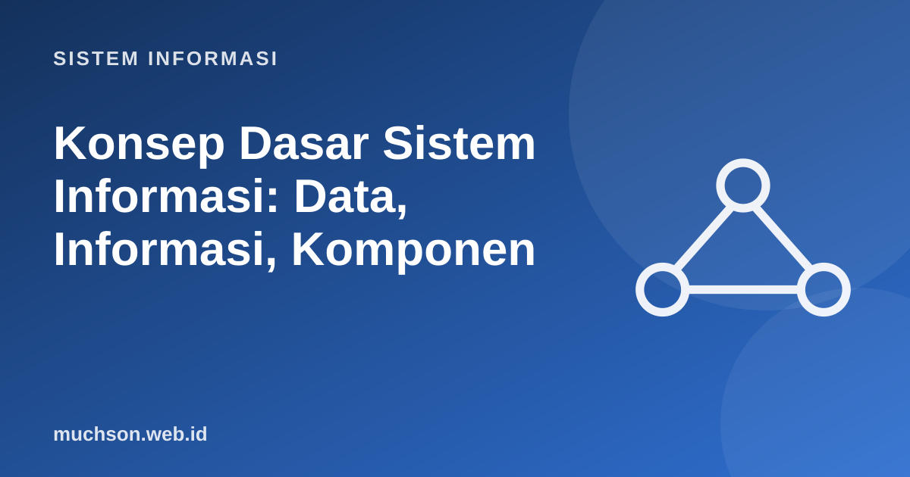

Beranda › Artikel › Sistem Informasi
Sistem InformasiKonsep Dasar Sistem Informasi: Data, Informasi, Komponen
Sistem informasi (SI) sering disamakan dengan "aplikasi" atau "komputer". Padahal sebuah SI mencakup manusia, proses, data, perangkat lunak, dan perangkat keras yang bekerja bersama untuk menghasilkan informasi yang membantu keputusan dan operasi organisasi. Pemahaman ini menjadi fondasi seluruh materi sistem informasi.
Sebaiknya sudah paham: tidak ada

Setelah membaca dan mencoba materi ini, Anda mampu:
- membedakan data, informasi, dan pengetahuan
- menyebutkan dan menjelaskan komponen sistem informasi
- menggambarkan siklus input–proses–output–umpan balik
- menilai kualitas informasi dengan dimensi yang jelas
- menjelaskan peran SI dalam operasi, manajemen, dan strategi organisasi
Data, informasi, pengetahuan
Contoh sehari-hari: angka "39" adalah data. "Suhu badan Budi 39 °C" adalah informasi. "Suhu di atas 38 °C selama tiga hari memerlukan pemeriksaan dokter" adalah pengetahuan.
Sistem informasi: lebih dari perangkat lunak
Sistem adalah sekumpulan elemen yang saling berhubungan untuk mencapai tujuan. Sistem informasi adalah sistem yang mengumpulkan, memproses, menyimpan, dan menyebarkan informasi untuk mendukung pengambilan keputusan, koordinasi, pengendalian, dan operasi.
Lima komponen sistem informasi
Kegagalan proyek SI lebih sering disebabkan oleh faktor manusia dan proses (pengguna tidak terlatih, prosedur tidak diubah, tidak ada dukungan manajemen) daripada oleh teknologinya.
Kualitas informasi
| Dimensi | Pertanyaan pemeriksa | Contoh gagal |
|---|---|---|
| Akurat | Apakah bebas kesalahan? | Nilai salah input sehingga IPK keliru |
| Tepat waktu | Tersedia saat dibutuhkan? | Laporan stok tiba setelah pesanan dibuat |
| Relevan | Berguna untuk keputusan ini? | Laporan 50 halaman untuk keputusan sederhana |
| Lengkap | Semua yang dibutuhkan ada? | Data penjualan tanpa nama cabang |
| Konsisten | Sama di semua tempat? | Alamat pelanggan berbeda di dua sistem |
| Dapat diverifikasi | Bisa ditelusuri sumbernya? | Angka tanpa asal data |
Peran SI dalam organisasi
- Efisiensi operasi: mengotomasi pekerjaan berulang (kasir, absensi, penggajian).
- Dukungan keputusan: menyediakan informasi untuk memilih.
- Keunggulan kompetitif: layanan lebih cepat, produk baru, biaya lebih rendah.
- Hubungan dengan pelanggan dan pemasok: e-commerce, CRM, rantai pasok.
- Kepatuhan: pencatatan untuk audit dan regulasi.
1. Sebutkan lima komponen SI pada toko online.
2. Ubah data berikut menjadi informasi: 12, 15, 9, 20 (penjualan harian).
3. Mengapa SI berbeda dari "aplikasi"?
4. Beri contoh informasi tidak berkualitas dan dimensi yang dilanggar.
- Data → informasi → pengetahuan → keputusan: nilai tambah bertahap.
- SI = perangkat keras, perangkat lunak, data, prosedur, manusia.
- Siklus input–proses–output–umpan balik.
- Informasi bermutu: akurat, tepat waktu, relevan, lengkap, konsisten, dapat diverifikasi.
- SI mendukung operasi, keputusan, dan strategi.
Tanya jawab
Apa bedanya sistem informasi dan teknologi informasi?
Apakah SI harus berbasis komputer?
Apa beda SI dan ilmu komputer?
Referensi
- Kenneth C. Laudon dan Jane P. Laudon, Management Information Systems: Managing the Digital Firm (Pearson)
- James A. O'Brien dan George M. Marakas, Management Information Systems (McGraw-Hill)
- Ralph M. Stair dan George W. Reynolds, Principles of Information Systems (Cengage)
- Russell L. Ackoff, From Data to Wisdom, Journal of Applied Systems Analysis 16 (1989)